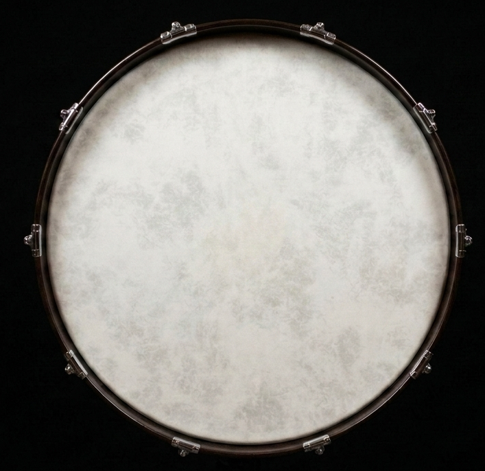

Strike
Play the center for a deep, fundamental voice. Move toward the rim to awaken brighter, asymmetric overtones.
A physical instrument for iPhone
No samples. No presets. One resonant, playable membrane, synthesized in real time.
Discover the instrument
The instrument
Every strike begins from silence and is formed anew.
Bassdrum models two tensioned membranes, their cylindrical shell, and the air between them. Touch position, force, contact size, and motion shape the sound at the instant you play.
The result is never a sample triggered twice. It is a small acoustic world—responsive, imperfect, and entirely yours.
Three natural gestures
Play the center for a deep, fundamental voice. Move toward the rim to awaken brighter, asymmetric overtones.
Draw a finger across the head to create a roll whose color changes continuously with every point of contact.
Leave your hand on the membrane and the sound is damped beneath it—just as it would be on an acoustic drum.
Made with restraint
Choose a pedal beater, mallet, drumstick, finger, or hand. Then play. There are no menus to study and no transport to manage.